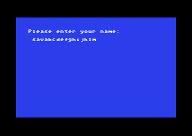

<meta charset="utf-8">
<meta name="viewport" content="width=device-width, initial-scale=1">
<title>Alter Ego</title>
<link rel="preconnect" href="https://fonts.googleapis.com">
<link rel="stylesheet" href="https://fonts.googleapis.com/css2?family=Lato:wght@400;700;900&family=IBM+Plex+Mono:wght@400;500&display=swap">
<style>
:root{
  --bg:#23262d; --paper:#e9e7e1; --surface:#ffffff; --surface-2:#f1efea; --line:#d5d3cc; --line-soft:#e0ded8;
  --ink:#2f3136; --ink-soft:#55585f; --ink-mute:#80838a;
  --link:#1f5fa8; --link-hover:#154480; --accent:#1f5fa8;
  --amber:#c25a00; --cyan:#1f5fa8; --coral:#d04a3a; --green:#2a8a4a; --violet:#4a5bd6; --hl:#fff0c2;
  --chip:#2f3136; --chip-ink:#ffffff;
  --c64blue:#40318d; --c64grey:#686868;
  --fd:'Lato',system-ui,sans-serif; --fb:'Lato',system-ui,sans-serif; --fm:'IBM Plex Mono',ui-monospace,Menlo,monospace;
  --col:1080px; --gx:68px; --fs:17px; --lh:1.6; --hw:900; --h1:46px; --h2:26px; --sy:48px; --pp:26px; --r:10px;
  --plate-shadow:0 1px 2px rgba(0,0,0,.05),0 4px 14px rgba(0,0,0,.05);
}
*{box-sizing:border-box}
html{background:var(--bg);min-height:100%}
body{background:var(--paper);color:var(--ink);font-family:var(--fb);font-size:var(--fs);line-height:var(--lh);max-width:var(--col);margin:0 auto;min-height:100vh;padding:0 0 4rem}
h1,h2,h3{font-weight:var(--hw);letter-spacing:-.01em;text-wrap:balance;color:var(--ink);margin:0}
.wrap{padding:0 var(--gx)}
.hero{padding:48px var(--gx) 8px;text-align:left}
.eyebrow{font-family:var(--fm);font-size:12px;letter-spacing:.08em;text-transform:uppercase;color:var(--ink-mute);margin:0 0 10px}
.hero h1{font-size:var(--h1);line-height:1.15;letter-spacing:-.02em;margin:0 0 14px}
.hero .sub{margin:0 0 .6em;color:var(--ink-soft)}
section{padding:var(--sy) 0 24px}
section:last-of-type{border-bottom:none}
.fig{font-family:var(--fm);font-size:12px;letter-spacing:.08em;text-transform:uppercase;color:var(--ink-mute);margin:0 0 10px}
h2.t{font-size:var(--h2);margin-bottom:12px}
.lede{color:var(--ink-soft);margin:0 0 30px}
.plate{background:var(--surface);border:1px solid var(--line);border-radius:var(--r);padding:var(--pp);box-shadow:var(--plate-shadow)}
.cap{font-size:14px;color:var(--ink-mute);margin-top:14px;line-height:1.55}
.cap b{color:var(--ink);font-weight:700}
code{font-family:var(--fm);font-size:.82em;background:var(--chip);color:var(--chip-ink);border-radius:4px;padding:2px 6px;white-space:nowrap}

</style>

<style>
a{color:var(--link)} a:hover{color:var(--link-hover)}
canvas{display:block;max-width:100%;height:auto;margin:20px auto;background:#16191e;image-rendering:pixelated;border-radius:4px}
label{display:inline-flex;align-items:center;gap:12px;margin:8px 18px 8px 0;flex-wrap:wrap;max-width:100%}
select,input,button{font:inherit;padding:7px;border:1px solid #a7abb2;border-radius:4px;max-width:100%;background:white;color:#252a35}
button{cursor:pointer}button:hover{background:#e4ebf5}input[type=range]{width:190px;accent-color:var(--accent)}
output,.readout{display:block;font:14px/1.6 var(--fm);padding:12px 0;overflow-wrap:anywhere}
.reference{max-width:100%;height:auto;display:block;margin:auto;image-rendering:pixelated}
table{border-collapse:collapse;width:100%;font-size:15px}th,td{text-align:left;padding:9px;border-bottom:1px solid var(--line)}
details{margin:16px 0;padding:12px 16px;background:var(--surface-2);border-radius:6px}summary{cursor:pointer;font-weight:700}
.key{display:inline-block;padding:3px 10px;margin:4px;border-radius:4px;background:#e1e6ed;font-size:14px}
pre{white-space:pre-wrap;overflow-wrap:anywhere;font:13px/1.6 var(--fm);max-height:420px;overflow:auto;background:#16191e;color:#eee;padding:18px}
@media(max-width:650px){:root{--gx:22px;--h1:36px;--sy:32px;--pp:16px}th,td{padding:6px;font-size:13px}}
.score-grid{display:grid;grid-template-columns:repeat(2,minmax(0,1fr));gap:12px 25px}.score-line{display:grid;grid-template-columns:145px 1fr 30px;gap:8px;align-items:center;font-size:14px}.score-line progress{width:100%;accent-color:var(--accent)}.question-text{min-height:3.2em;font-size:19px;font-weight:700}.choices{display:flex;gap:12px}.choices button[aria-pressed=true]{background:#1f5fa8;color:white}.formula{font:14px/1.6 var(--fm);overflow-wrap:anywhere}.glyph-grid{display:flex;gap:10px;flex-wrap:wrap}.glyph-grid button{padding:5px 9px}.glyph-grid button[aria-pressed=true]{background:#1f5fa8;color:white}@media(max-width:720px){.score-grid{grid-template-columns:1fr}.score-line{grid-template-columns:140px 1fr 30px}}
</style><!-- tabs -->
<header class="hero"><p class="eyebrow">Commodore 64 · 1986 · Activision</p><h1>Alter Ego</h1><p class="sub">A life simulation controlled through menus and choices. This capture begins at the male edition’s name prompt.</p></header>
<main class="wrap">
<section><p class="fig">01 · Personality</p><h2 class="t">Answers change the distance to 100</h2><p>The questionnaire starts each trait at 50. A percentage increase takes a share of the distance still remaining to 100; a decrease takes a share of the existing score. Operations happen in question order, with each fraction rounded down before the next operation.</p><div class="plate"><label>Question <select id="question"></select></label><p id="question-text" class="question-text"></p><div class="choices"><button id="answer-true" type="button">TRUE</button><button id="answer-false" type="button">FALSE</button></div><p><button id="all-true" type="button">All TRUE</button> <button id="all-false" type="button">All FALSE</button></p><div id="trait-scores" class="score-grid"></div><output id="parenting"></output><details><summary>Effects of this answer</summary><div id="answer-effects" class="formula"></div></details><p class="cap">The two tables contain 25 score records each. Sixty complete native runs match the calculation used here, including every single-answer flip on both baselines. Statements retain the game’s wording. <a href="source.html#8E29">Scoring routine</a> · <a href="source.html#94AE">TRUE records</a> · <a href="source.html#971F">FALSE records</a></p></div><p>These tables leave Intelligence, Physical and Vocational at 50. Question 22 TRUE sets a separate strict-parenting flag. The scoring routine produces the same result for the same answers; later stage-entry changes remain unverified.</p></section>
<section><p class="fig">02 · Name</p><h2 class="t">Sixteen characters fit exactly</h2><div class="plate"><p class="cap">Ordinary keyboard input fills the 16-byte field. DEL removes the last character; further letters are ignored when the field is full. A full name has no zero terminator inside the field. <a href="source.html#511C">Name editor</a> · <a href="source.html#82CB">Stored name</a></p></div></section>
<section><p class="fig">03 · Drawing</p><h2 class="t">Borders share their pixels</h2><p>The menus use small border and fill patterns. Several directory entries share the same bytes or begin halfway through another pattern. Select one to see its eight rows.</p><div class="plate"><div id="glyph-buttons" class="glyph-grid"></div><canvas id="glyph" width="256" height="256" aria-label="Selected eight-by-eight border pattern"></canvas><output id="glyph-info"></output><p class="cap">All sixteen native glyph copies match these patterns. The row and column address tables select the destination bitmap cell. <a href="source.html#48DB">Glyph directory</a> · <a href="source.html#47B8">Copy routine</a></p></div></section>
<section><p class="fig">04 · Allocation</p><h2 class="t">An oversized request can wrap</h2><p>The allocator adds a requested size to a 16-bit address, then checks the result against a stack guard. If the addition wraps, a small result can pass. This controlled example uses the same heap and stack addresses as the native boundary tests.</p><div class="plate"><label>Requested bytes <input id="heap-size" type="number" min="0" max="65535" value="2193"></label><p><button id="heap-limit" type="button">At the guard</button> <button id="heap-over" type="button">One byte beyond</button> <button id="heap-wrap" type="button">Wrap to zero</button></p><output id="heap-result"></output><p class="cap">Heap starts at $C465; the expression-stack pointer is $CDF6 at the comparison, producing guard $CCF6 after subtracting $0100. Eight native tests match this calculation. A route from ordinary play to an overflowing request has not been established. <a href="source.html#6E70">Allocator</a></p></div></section>
<section><p class="fig">05 · Text</p><h2 class="t">Eight codes in each compressed group</h2><p>Scene text mostly uses ten-bit dictionary codes, eight in each ten-byte group. Only the first two codes use nine bits. Adding the first compound entry starts a fresh ten-byte group and throws away the six unused slots in the initial nine-byte group. Scene 26 contains 4,130 codes: two initial codes followed by 516 groups of eight.</p><div class="plate"><table><thead><tr><th>MAP1 scene 26</th><th>Size</th></tr></thead><tbody><tr><td>Compressed bytes consumed</td><td>5,169</td></tr><tr><td>Decoded bytes</td><td>7,872</td></tr><tr><td>Descriptor slices</td><td>39</td></tr><tr><td>Dictionary prefix and suffix bytes</td><td>3,072</td></tr></tbody></table><p class="cap">Independent decompression reproduces the complete dictionary and boundary table in this image, plus a 394-byte cached narrative descriptor. The name prompt does not display that descriptor. Native checks confirm the bit reader and width transition; the complete live disk/error path remains open. <a href="source.html#B57B">Dictionary</a> · <a href="source.html#A850">Group reader</a> · <a href="source.html#C2A2">Cached descriptor</a></p></div></section>
<section><p class="fig">06 · Scope</p><h2 class="t">The program at the name prompt</h2><p>The Source tab shows the male edition at its first name prompt: native routines, compiled bytecode and retained initialization data. Later gameplay replaces part of the program; male and female overlays need their own fresh captures. The purpose of several retained allocations and the earlier bootstrap fragment remains open.</p><p>RAM beneath the I/O chips contains a 2,048-byte copy of another resident VM region. Hardware accesses at those same addresses use a different occupant. <a href="source.html#D800">Stored VM mirror</a></p></section>
</main>
<script>
const scoreRecords=[[[[1,10,50],[1,9,30],[1,0,10],[1,8,20],[1,3,10]],[[2,9,20],[2,8,10],[2,1,20]],[[2,9,20],[2,0,30]],[[2,4,60],[2,9,30]],[[2,5,40],[2,8,30],[2,1,20]],[[2,10,30],[1,8,50],[2,9,10],[2,0,10]],[[2,9,60],[2,4,0]],[[1,1,50],[1,5,30],[1,8,20]],[[2,1,30],[2,4,20]],[[2,1,30],[2,8,20],[2,2,10]],[[2,5,40]],[[2,10,20],[2,9,50]],[[1,2,40],[2,4,20]],[[1,3,30],[2,0,30],[2,1,30]],[[2,1,80],[2,0,40],[2,8,60]],[[2,9,20]],[[2,9,10],[2,10,10],[1,8,50],[1,1,20]],[[2,2,20],[2,4,20],[2,8,10]],[[2,0,20],[2,2,10]],[[2,3,10]],[[2,8,20],[2,1,10]],[[2,3,20],[0,49,1]],[[2,8,10],[1,1,10],[2,9,10]],[[2,4,30]],[[2,4,20]]],[[[2,10,20],[2,9,10],[2,3,10]],[[2,0,10],[1,8,20],[1,9,30]],[[1,1,20],[1,0,30]],[[1,4,30],[1,8,10]],[[1,5,40],[1,8,30],[1,1,10]],[[1,5,20],[2,8,10],[1,4,20]],[[2,0,10],[1,9,20],[1,4,10]],[[2,1,40],[2,5,20],[2,8,20]],[[1,1,40],[1,4,30]],[[1,1,30],[1,8,20],[1,2,10]],[[1,5,40]],[[1,9,20]],[[2,2,10],[1,4,20],[2,0,10],[1,8,20]],[[1,2,20],[1,1,20]],[],[[1,9,20]],[[1,9,30],[1,10,20],[1,8,10]],[[1,2,40]],[[1,0,20],[1,8,30],[1,2,20]],[[1,3,30]],[[1,8,20],[1,2,20]],[[1,3,30]],[[1,8,30],[1,9,30]],[[1,4,20]],[[1,4,20]]]],questions=["I will probably try to answer these questions honestly.","I am likely to speak whatever comes to mind.","I am a light sleeper who stirs at even the slightest sound.","Revenge is sweet.","I often feel slow, tired, and down in the dumps.","An important part of every job is knowing who to impress.","I am fascinated by car accidents and other disaster scenes.","The people who know me best like me as a person.","I am extremely sensitive to criticism.","I get nervous performing in front of people, even when the task is something I know by heart.","The people around me seem to be happier than me.","When I see a \"Wet Paint\" sign, I always want to touch to find out if it's really wet.","When I am ill, I become short- tempered and snap at people.","On important matters, I usually follow my parents' advice, even when I disagree with it.","It is possible that we live in a world where people watch our every move.","When I am in a quiet place I get the urge to scream.","It is O.K. to tell a white lie if it is guaranteed to bring great personal gain.","It is often pointless to try to discuss problems with another person.","I am easily embarrassed.","Children should be seen and not heard.","I find it difficult to break the ice in conversations with people I barely know.","My parents were extremely strict disciplinarians.","You can usually judge a person by first impressions.","One way of getting people to treat you fairly is to take an aggressive stance and make them win you over.","I think questions like this are stupid and meaningless."],traitNames=["Calmness","Confidence","Expressiveness","Familial","Gentleness","Happiness","Intelligence","Physical","Social","Thoughtfulness","Trustworthiness","Vocational"],glyphPatterns=[{"index":0,"address":18683,"pixels":[0,0,63,48,48,48,48,48]},{"index":1,"address":18691,"pixels":[0,0,252,12,12,12,12,12]},{"index":2,"address":18699,"pixels":[48,48,48,48,48,63,0,0]},{"index":3,"address":18707,"pixels":[12,12,12,12,12,252,0,0]},{"index":4,"address":18715,"pixels":[0,0,255,0,0,0,0,0]},{"index":5,"address":18723,"pixels":[0,0,0,0,0,255,0,0]},{"index":6,"address":18731,"pixels":[48,48,48,48,48,48,48,48]},{"index":7,"address":18739,"pixels":[12,12,12,12,12,12,12,12]},{"index":8,"address":18747,"pixels":[255,0,0,0,0,0,0,0]},{"index":9,"address":18755,"pixels":[192,192,192,192,192,192,192,192]},{"index":10,"address":18763,"pixels":[255,192,192,192,192,192,192,192]},{"index":11,"address":18771,"pixels":[192,0,0,0,0,0,0,0]},{"index":12,"address":18719,"pixels":[0,0,0,0,0,0,0,0]},{"index":13,"address":18775,"pixels":[0,0,0,0,255,255,255,255]},{"index":14,"address":18779,"pixels":[255,255,255,255,255,255,255,255]},{"index":15,"address":18719,"pixels":[0,0,0,0,0,0,0,0]}];
const answers=Array(25).fill(1);
function calculatePersonality(values){const state=Array(64).fill(0);state.fill(50,0,12);for(let i=0;i<25;i++)for(const [op,index,magnitude] of scoreRecords[values[i]===1?0:1][i]){const old=state[index];state[index]=(op===0?magnitude:op===1?old+Math.floor((100-old)*magnitude/100):old-Math.floor(old*magnitude/100))&65535;}return state;}
const qSelect=document.getElementById('question');questions.forEach((q,i)=>{const o=document.createElement('option');o.value=i;o.textContent=`${i+1} of 25`;qSelect.append(o);});
function renderPersonality(){const i=Number(qSelect.value),s=calculatePersonality(answers);document.getElementById('question-text').textContent=questions[i];for(const [id,value] of [['answer-true',1],['answer-false',2]])document.getElementById(id).setAttribute('aria-pressed',String(answers[i]===value));const holder=document.getElementById('trait-scores');holder.replaceChildren();traitNames.forEach((name,index)=>{const row=document.createElement('div');row.className='score-line';const label=document.createElement('span');label.textContent=name;const bar=document.createElement('progress');bar.max=100;bar.value=s[index];bar.setAttribute('aria-label',`${name}: ${s[index]}`);const value=document.createElement('span');value.textContent=s[index];row.append(label,bar,value);holder.append(row);});document.getElementById('parenting').textContent=`Strict-parenting flag: ${s[49]?'set':'clear'}`;document.getElementById('answer-effects').textContent=scoreRecords[answers[i]===1?0:1][i].map(([op,index,m])=>`${traitNames[index]||'Strict-parenting flag'}: ${op===0?'set to '+m:op===1?'add '+m+'% of remaining distance to 100':'subtract '+m+'% of existing value'}`).join('; ')||'No effect';}
qSelect.addEventListener('change',renderPersonality);for(const [id,value]of [['answer-true',1],['answer-false',2]])document.getElementById(id).addEventListener('click',()=>{answers[Number(qSelect.value)]=value;renderPersonality();});for(const [id,value]of [['all-true',1],['all-false',2]])document.getElementById(id).addEventListener('click',()=>{answers.fill(value);renderPersonality();});renderPersonality();
function renderGlyph(index){const pattern=glyphPatterns[index],ctx=document.getElementById('glyph').getContext('2d');ctx.fillStyle='#f1efea';ctx.fillRect(0,0,256,256);ctx.fillStyle='#252a35';pattern.pixels.forEach((v,y)=>{for(let x=0;x<8;x++)if(v&(128>>x))ctx.fillRect(x*32,y*32,32,32);});document.getElementById('glyph-info').textContent=`Pattern ${index} · $${pattern.address.toString(16).toUpperCase()} · rows ${pattern.pixels.map(v=>v.toString(16).padStart(2,'0')).join(' ')}`;document.querySelectorAll('#glyph-buttons button').forEach((b,i)=>b.setAttribute('aria-pressed',String(i===index)));}
glyphPatterns.forEach((p,i)=>{const b=document.createElement('button');b.type='button';b.textContent=i;b.addEventListener('click',()=>renderGlyph(i));document.getElementById('glyph-buttons').append(b);});renderGlyph(0);
function calculateHeap(size){const heap=0xC465,guard=0xCCF6,end=(heap+size)&65535,accepted=end<=guard;return {end,accepted,newHeap:accepted?end:heap};}
function renderHeap(){const input=document.getElementById('heap-size'),size=Math.max(0,Math.min(65535,Math.trunc(Number(input.value)||0))),v=calculateHeap(size),hex=n=>'$'+n.toString(16).toUpperCase().padStart(4,'0');document.getElementById('heap-result').textContent=`${size} bytes: end ${hex(v.end)}. ${v.accepted?'Accepted':'Rejected'}; next heap ${hex(v.newHeap)}.${0xC465+size>65535?' The address addition wrapped.':''}`;}
document.getElementById('heap-size').addEventListener('input',renderHeap);for(const [id,size]of [['heap-limit',2193],['heap-over',2194],['heap-wrap',15259]])document.getElementById(id).addEventListener('click',()=>{document.getElementById('heap-size').value=size;renderHeap();});renderHeap();
</script>
